| Número |
Títol |
Descripció |
Imatge |
| 1 |
Seven Thirty-Seven |
Walter i Jesse intenten expandir el seu negoci amb Tuco, però la seva inestabilitat i violència fan que la situació es torni perillosa. Walter comença a planejar una sortida. |
|
| 2 |
Grilled |
Walter i Jesse són segrestats per Tuco i portats al desert. Skyler i Hank comencen a investigar la desaparició de Walter. |
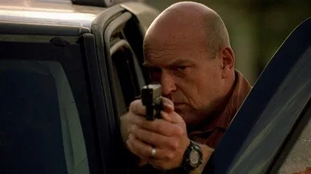 |
| 3 |
Bit by a Dead Bee |
Després d’escapar de Tuco, Walter inventa una història per justificar la seva absència, mentre Hank tracta amb les conseqüències del seu enfrontament amb Tuco. |
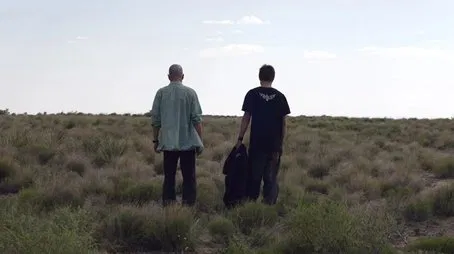 |
| 4 |
Down |
Les tensions entre Walter i Skyler augmenten, mentre Jesse intenta trobar un lloc on viure després de perdre-ho tot. |
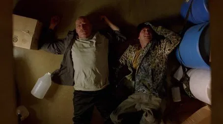 |
| 5 |
Breakage |
Hank comença a mostrar signes de trauma després del tiroteig amb Tuco. Jesse intenta establir el seu propi equip de distribució de metanfetamina. |
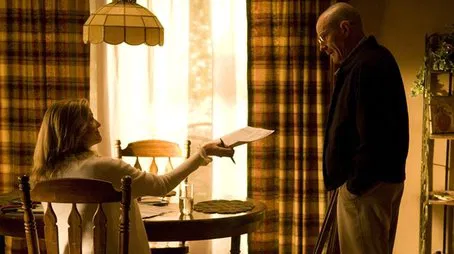 |
| 6 |
Peekaboo |
Jesse visita uns addictes per recuperar diners robats i es troba amb una situació tràgica. Walter es concentra en mantenir la seva doble vida. |
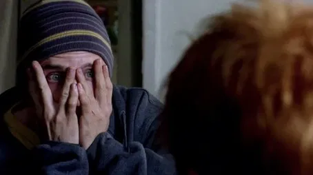 |
| 7 |
Negro y Azul |
Una cançó popular mexicana comença a parlar sobre Heisenberg. Hank és traslladat a El Paso, mentre Walter i Jesse enfronten nous desafiaments al negoci. |
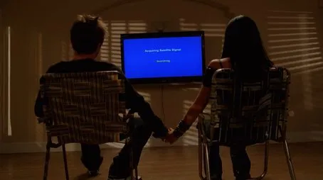 |
| 8 |
Better Call Saul |
Jesse i Walter contracten l’advocat Saul Goodman per treure’ls d’un embolic legal. Es presenta un nou aliat clau per al futur. |
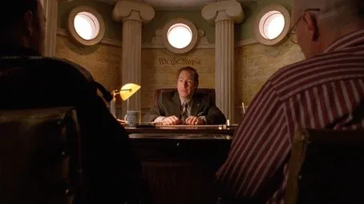 |
| 9 |
4 Days Out |
Walter i Jesse es queden atrapats al desert mentre intenten produir una gran quantitat de metanfetamina. Walter reflexiona sobre la seva vida i malaltia. |
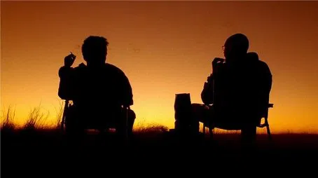 |
| 10 |
Over |
Walter celebra la seva aparent millora de salut, però el seu ego comença a créixer. Skyler s’allunya cada cop més d’ell. |
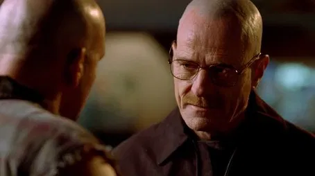 |
| 11 |
Mandala |
Jesse pateix la mort d’una persona propera, mentre Saul presenta a Walter un nou contacte: Gus Fring. |
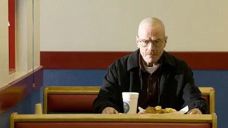 |
| 12 |
Phoenix |
Walter enfronta una decisió moralment devastadora. Les seves accions tindran conseqüències irreversibles per a Jesse. |
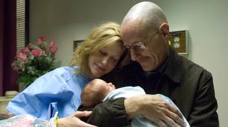 |
| 13 |
ABQ |
Les conseqüències de les accions de Walter culminen en una tragèdia. L’impacte de la seva doble vida comença a afectar tothom al seu voltant. |
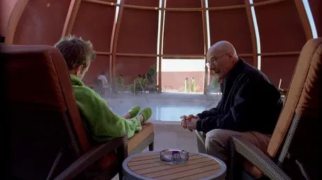 |